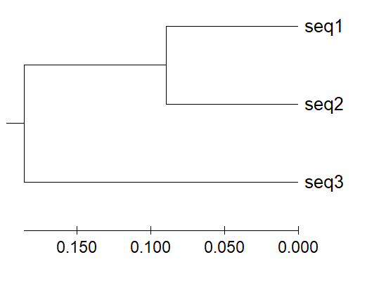
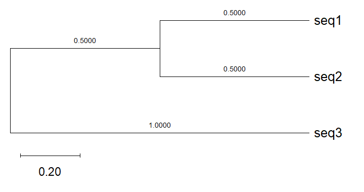
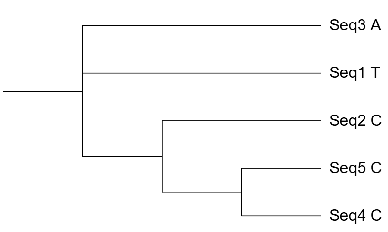
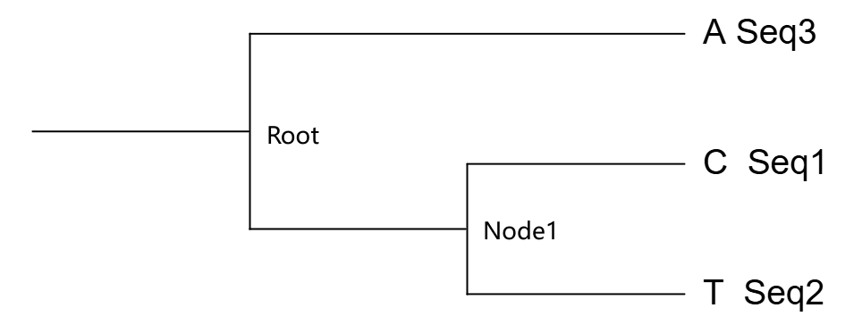
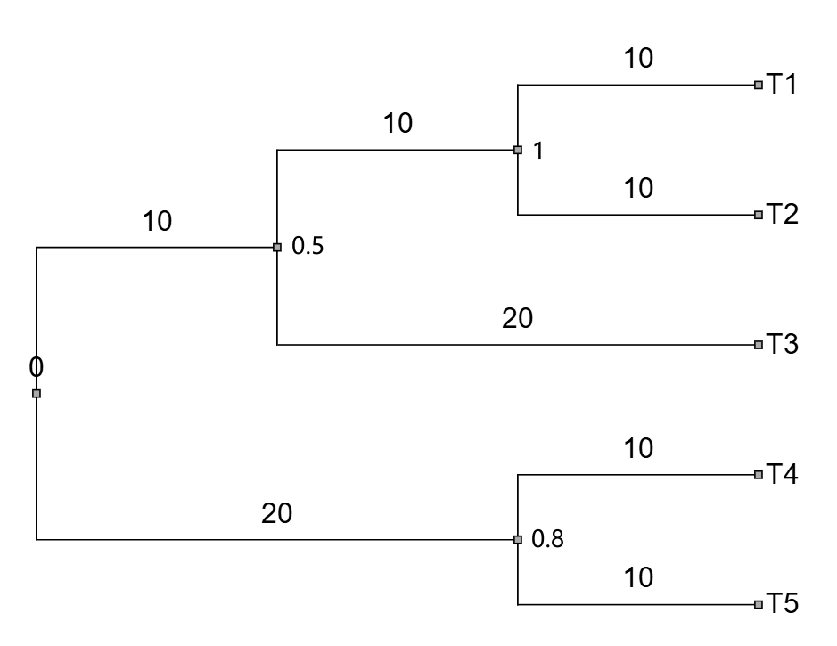

前言
自古以来，人们都以形态学特征去分类物种，但是形态评估是一个极其主观的评价标准，对于细微的物种区分，形态学变得不再适用。因此，以物种基因蛋白序列的差异去分析两个物种是否“相似”，我们可以用精确的数学语言去量化两个物种“长”的有多像？而去量化它的方法也具有很多种，本文章简略的介绍了各个算法的基本原理，并将介绍了比对结果的数据结构和可视化表现（进化树）。
算法
让我们以一个最简单的例子开始吧！我们将用不同算法分别去演示这三个序列最后的亲缘关系：
seq1: AACGTCA
seq2: AAGGTCA
seq3: AATATCA
我们能想到最简单的方法是给它们两两之间打分，打分越高，说明它们两之间越相似，而算法就是看怎么给它们打分？
UPGMA (非加权组平均法)
UPGMA (unweighted pair-group method with arithmetic means) 是最简单的距离法。它的核心假设是分子钟，即所有谱系的进化速率相同。
第一步：计算距离矩阵
我们简单计算碱基差异数：
- $d(1, 2) = 1$ （第3位 C vs G）
- $d(1, 3) = 2$ （第3位 C vs T，第4位 G vs A）
- $d(2, 3) = 2$ （第3位 G vs T，第4位 G vs A）
| seq1 | seq2 | seq3 | |
|---|---|---|---|
| seq1 | 0 | 1 | 2 |
| seq2 | 1 | 0 | 2 |
| seq3 | 2 | 2 | 0 |
第二步：聚类
- 找到最小距离：$d(1, 2) = 1$。将 Seq1 和 Seq2 聚为一个簇 $(1,2)$。
- 计算节点高度：分支点高度为 $1 / 2 = 0.5$。本质是为了反映聚类双方之间的“进化距离”，表现在树上就是分支点与这两个物种的长度。在 UPGMA 中，我们假设所有物种的进化速率是完全一致的。这意味着从共同祖先到任何一个现存物种的“进化时间”（或距离）都应该是相等的。
- 计算新簇与 Seq3 的距离：使用算术平均： $$d((1,2), 3) = \frac{d(1, 3) + d(2, 3)}{2} = \frac{2 + 2}{2} = 2$$ 这个距离就是 (1,2) 与 seq3 聚类后新节点分别离 seq1、seq2、seq3 的距离。
- 最后聚类：将 $(1,2)$ 与 Seq3 聚类，分支点高度为 $2 / 2 = 1.0$。
我们使用 MEGA 12 绘制一下：

注意：UPGMA 产生的树是有根树且满足超度量，但在现实中，不同物种进化速率往往不同，所以现在科研中更多使用 NJ 法或更高级的方法（所以 UPGMA 的树最后所有叶子都在一条直线上）。
NJ (邻接法)
NJ 是在 UPGMA 的基础上考虑每个物体不同的进化速度，它允许不同分支有不同的进化速率。
继续沿用之前的差异位点数矩阵：
| seq1 | seq2 | seq3 | |
|---|---|---|---|
| seq1 | 0 | 1 | 2 |
| seq2 | 1 | 0 | 2 |
| seq3 | 2 | 2 | 0 |
NJ 法并不像 UPGMA 那样直接找最小值聚类，它首先假设所有的序列都从一个中心点出发。
第一步：计算净分化值 ($r_i$)
NJ 会计算每个物种相对于其他所有物种的总距离。这反映了一个物种的“进化速率”。
公式：$r_i = \sum d_{ij}$ (该行距离之和)
- $r_1 = d(1,2) + d(1,3) = 1 + 2 = 3$
- $r_2 = d(2,1) + d(2,3) = 1 + 2 = 3$
- $r_3 = d(3,1) + d(3,2) = 2 + 2 = 4$
第二步：计算 Q 矩阵
Q 矩阵的作用是惩罚那些进化得太快（$r$ 值大）的物种，避免它们被错误地聚在一起。
公式：$Q_{i,j} = (n-2)d_{ij} - r_i - r_j$ （这里 $n=3$）
- $Q_{1,2} = (3-2) \times 1 - 3 - 3 = -5$
- $Q_{1,3} = (3-2) \times 2 - 3 - 4 = -5$
- $Q_{2,3} = (3-2) \times 2 - 3 - 4 = -5$
在只有 3 条序列的情况下，所有 Q 值都相等，因为只有一种无根树的拓扑结构。当 $n \ge 4$ 时，Q 矩阵才会选出最小的一对。
第三步：计算分支长度
这是 NJ 与 UPGMA 的最大区别。我们假设 Seq1 和 Seq2 被聚在一起，连接它们的新节点为 $U$。
我们需要计算从 $U$ 到 Seq1 和 Seq2 的分支长度（$L_1$ 和 $L_2$）。
公式：$$L_1 = \frac{1}{2}d_{12} + \frac{1}{2(n-2)}(r_1 - r_2)$$
- $L_1 = \frac{1}{2}(1) + \frac{1}{2(3-2)}(3 - 3) = 0.5$
- $L_2 = \frac{1}{2}(1) + \frac{1}{2(3-2)}(3 - 3) = 0.5
那么从 $U$ 到 Seq3 的距离呢？
$$L_3 = d_{13} - L_1 = 2 - 0.5 = 1.5$$
或者用 $d_{23} - L_2 = 2 - 0.5 = 1.5$。
我们来对比一下 UPGMA 和 NJ 最后结果的差异：
| 方法 | Seq1 分支长度 | Seq2 分支长度 | Seq3 分支长度 |
|---|---|---|---|
| UPGMA | 0.5 | 0.5 | 1.0 |
| NJ | 0.5 | 0.5 | 1.5 |
同样使用 MEGA12，Substitution Model 选用 No. of differences，对我们 NJ 算法结果进行可视化：

注意 NJ 建的是无根树，绘图中有一个虚拟根，seq3 的长度是节点与 seq3 叶子的和。选用 No. of differences 是因为一般来讲，为了让不同长度的序列具有可比性，软件通常会将差异数除以序列的总长度，或用其它方式，而我们考虑最简单的情况，因此选用 No. of differences。
ML (最大似然法)
最大似然法数学原理很简单，我们只需要有高中数学只是就足以理解其原理了！
例子
为了说明极大似然原理, 我们先看个例子：
一个罐子，里面有黑白两种颜色的球，数目多少不知，两种颜色的比例也不知。我们想知道罐中白球和黑球的比例，但我们不能把罐中的球全部拿出来数。
每次任意从已经摇匀的罐中拿一个球出来，记录球的颜色，然后把拿出来的球再放回罐中。假如在10次重复记录中，有7次是白球，请问罐中白球所占的比例最有可能是多少？
瞪眼法
凭借数学尝试，你会认为白球所占的比例最有可能是 0.7。但是，罐子里面白球所占的比例为 0.69 也有可能出现我们的实验结果。我们只能说：“当白球所占的比例为 0.7 时，最有可能出现我们的实验结果”。
定义模型与参数
我们要建立一个数学模型来描述摸球的过程：
- 观测数据 (Data)：10 次实验，7 次白球，3 次黑球。
- 未知参数 ($p$)：罐子中白球的真实比例（这是我们要算的）。
- 概率模型：由于是放回抽样，这符合二项分布。
似然函数建立
我们首先来建立似然函数，这一步很好理解：在参数 $p$ 取不同值时，观察到“7白3黑”这一结果的可能性有多大？
$$L(p) = P(\text{Data} \mid p) = C_{10}^{7} \cdot p^7 \cdot (1-p)^3$$
求极值
最大似然法的目标是找到一个 $\hat{p}$，使得 $L(p)$ 的值达到最大。这一步我们办法太多了，这本质上就是一个及其简单的高中数学问题：
当 $p$ 取多大时，能使下列函数 $L(p)$ 有最大值？
$$L(p) = P(\text{Data} \mid p) = C_{10}^{7} \cdot p^7 \cdot (1-p)^3$$
直接求导有点麻烦，我们把它拆成一个多项式！怎么拆？直接取对就可以了！
$$\ln L(p) = \ln C_{10}^{7} + 7\ln(p) + 3\ln(1-p)$$
这下好求导了，我们对 $p$ 求导并令导数为 0：
$$\frac{d}{dp} \ln L(p) = \frac{7}{p} - \frac{3}{1-p} = 0$$
解方程：
$$7(1-p) = 3p \implies 7 - 7p = 3p \implies 10p = 7 \implies p = 0.7$$
下结论
在这个例子中，最大似然法告诉我们：当罐子中白球比例为 70% 时，最有可能出现“10抽7中”这种实验结果。
这与进化树有什么关系？
当你构建进化树时，最大似然法的逻辑是完全一样的，只是参数变得复杂得多：
| 元素 | 摸球例子 | 进化树构建 |
|---|---|---|
| 观测数据 (Data) | 7白 3黑 | 现有的 DNA/蛋白质多重序列比对 (MSA) |
| 未知参数 | 比例 $p$ | $p$树的拓扑结构、枝长、替换模型参数 |
| 目标 | 找到最可能的 $p$ | 找到一棵树，使得产生这组序列的概率最大 |
示例
我们用以下对齐好的序列来进行最大似然建树：
已知 $S$ 个已对位排列的同源序列，每个序列包含 $N$ 个核苷酸，用 $S \times N$ 阶矩阵 $X=\left \{ X_{jh} \right \}$ 表示,其中 $x_{jh}$ 表示第 $j$ 个序列中的第 $h$ 个核苷酸。令 $X_h$ 表示数据矩阵中的第 $h$ 列：
$$\left \{ X_{jh} \right \} =\begin{Bmatrix} T & A & T & C & G\\ C & A & T & A & G\\ A & G & T & C & A\\ C & A & T & C & G\\ C & A & T & C & G \end{Bmatrix}$$
$$$$
其中，$S = 5$，$N = 5$。
设定核苷酸替换模型
在计算之前，必须定义“球变成另一种颜色的概率”，也就是基因突变的概率。最简单的模型是 Jukes-Cantor (JC69) 模型，它假设：
- 四种碱基 (A, T, C, G) 的出现频率相等（各占 25%）。
- 任意两种碱基之间相互替换的速率相等（记为 $\alpha$）。
我们用 $q_{ij}$ 表示核苷酸 $i$ 变成核苷酸 $j$ 时的瞬时速率。其中 $(i,j=T,C,A,G)$。根据 JC69 模型，在进化时间（或枝长）为 $t$ 的情况下，一个碱基保持不变的概率 $P_{ii}(t)$ 和变成其他特定碱基的概率 $P_{ij}(t)$ 分别为：
$$P_{ii}(t) = \frac{1}{4} + \frac{3}{4}e^{-4\alpha t}$$
$$P_{ij}(t) = \frac{1}{4} - \frac{1}{4}e^{-4\alpha t}$$
模型有很多种，除了 JC69 外，常见的还有 K80、F81、F84 等等。每一种模型都对应于一种生物学假设，至于用哪个？像 IQ-TREE 这种专攻 ML 建树的软件会都试一遍，选取出现概率做大的那种模型。
提取单列位点
最大似然法的一个核心前提是：每个核苷酸位点的进化是相互独立的。因此，我们需要对矩阵 $X$ 逐列进行计算。
以第一列（$h=1$）为例，观测到的叶子节点状态为：
- $Seq_1$: T
- $Seq_2$: C
- $Seq_3$: A
- $Seq_4$: C
- $Seq_5$: C
计算单一拓扑结构下单一位点的似然值
对于第一列，我们一共有很多种可能的树，我们在这里手动去评估一种树的似然值：
$$(((Seq4, Seq5), Seq2), Seq1, Seq3);$$

为了计算这棵树产生第一列数据的概率 $L_1$，我们需要面对一个问题：我们不知道内部节点（共同祖先）的碱基序列是什么，就是在第 “0” 列的祖先序列是什么。
为了解决这个问题，算法必须遍历所有可能的祖先状态（A、T、C、G），并将概率相加。设树有 $k$ 个内部节点，对于第一列 $X_1$，其似然值计算公式为：
$$L_1 = P(X_1 \mid Tree) = \sum_{A_1 \in \{A,C,G,T\}} \cdots \sum_{A_k \in \{A,C,G,T\}} P(Root) \prod_{branch} P_{ij}(t_{branch})$$
为了具体演示，我们简化一下，只取 3 条序列的微型树 $((T, C), A);$。假设共同祖先的碱基全部为 A。我们来描述一下：根节点 (Root) 分裂出 Seq3 和内部节点 (Node1)。内部节点 (Node1) 继续分裂出 Seq1 和 Seq2。

设定这 4 个分支的进化时间（枝长 $t$）全部相等，且假定在 JC69 模型下计算出的概率为：
- 碱基不发生替换的概率（例如 A 保持为 A）：$P_{same} = 0.75$
- 碱基替换为特定另一种的概率（例如 A 突变为 C）：$P_{diff} = 0.08$
- 根节点初始为任意碱基的先验概率：$P(Root) = 0.25$
现在，我们将指定的条件（Root = A, Node1 = A）代入公式中：
$$P(X_1 \mid \text{祖先全为 A}) = P(Root=A) \times \prod_{branch} P_{ij}(t)$$
我们需要把整棵树上发生的所有“事件”的概率乘起来。一共有 5 个关键概率：
- 根节点初始为 A 的概率：
$P(Root = A) = 0.25$ - Root (A) 演化为 Seq3 (A) 的概率（未突变）：
$P_{AA} = 0.75$ - Root (A) 演化为 Node1 (A) 的概率（未突变）：
$P_{AA} = 0.75$ - Node1 (A) 演化为 Seq1 (C) 的概率（发生突变）：
$P_{AC} = 0.08$ - Node1 (A) 演化为 Seq2 (T) 的概率（发生突变）：
$P_{AT} = 0.08$
将上述独立事件的概率相乘，就得到了在“祖先全是 A”这一特定假设下，产生我们观测序列的概率：
$$P = 0.25 \times 0.75 \times 0.75 \times 0.08 \times 0.08 = P = 0.0009$$
在完成计算祖先全是 A 的情况后，我们还要算：
- Root 是 A，Node1 是 T 的概率
- Root 是 A，Node1 是 C 的概率
- Root 是 A，Node1 是 G 的概率
- Root 是 T，Node1 是 A 的概率
- Root 是 T，Node1 是 T 的概率
- Root 是 T，Node1 是 C 的概率
- ......
在这个包含 2 个内部节点的微型树中，计算机需要计算 $4 \times 4 = 16$ 种可能的祖先组合，将这 16 个类似于 0.0009 的结果全部加起来，才是这棵树在当前枝长下，第一列位点真正的似然值 $L_1$
如果面对的是包含上百个物种的真实建树任务，内部节点可能有几十个，求和的项数会呈指数级爆炸（$4^k$）。这就是为什么最大似然法在早期计算机算力不足时难以普及，直到 Felsenstein 提出了 Pruning 算法（动态规划），才让这种运算在合理的时间内成为可能。
计算整段序列的总似然值
对齐好的序列共有 5 列，程序会重复第三步，分别算出 $L_1, L_2, L_3, L_4, L_5$。
这棵特定拓扑树在当前枝长下的总似然值 ($L$) 是各个独立位点似然值的乘积：
$$L = \prod_{h=1}^{5} L_h = L_1 \times L_2 \times L_3 \times L_4 \times L_5$$
为了防止计算机在处理成千上万个位点时遇到浮点数下溢（乘积无限趋近于 0），程序会取自然对数，即对数似然值 $\ln L$：
$$\ln L = \sum_{h=1}^{5} \ln L_h$$
最优化与迭代
到此为止，我们仅仅算出了一棵树形、在一组特定枝长下的得分。建树软件接下来的工作是：
- 优化枝长：保持当前树形不变，微调各个枝长 $t$，对 $t$ 求偏导寻找使 $\ln L$ 最大的枝长组合。
- 更改树形：采用启发式搜索（如 NNI 或 SPR 算法），稍微改变树的拓扑结构（比如把 Seq3 和 Seq4 换个位置），然后重复步骤三和四。
- 最终输出：当尝试了足够多的树形后，输出那个拥有最高全局 $\ln L$ 值的拓扑结构和枝长，这就是最终的最大似然树。
通过这个矩阵运算的拆解，可以看到 ML 法极其消耗计算资源，但它充分利用了每一个位点的信息和替换模型的统计学优势。
至于 Bootstrap（支持率），后面有时间再研究。
Bayes (贝叶斯法)
最大似然法（ML）问的是：“给定一棵树，它产生现有数据的概率有多大？” 而贝叶斯法（BI）反转了这个问题，它问的是：“既然我已经看到了这些序列数据，那么某棵特定的树是真实进化树的概率有多大？”
贝叶斯方法基于以下数学逻辑：
$$P(\text{Tree} \mid \text{Data}) = \frac{P(\text{Data} \mid \text{Tree}) \times P(\text{Tree})}{P(\text{Data})}$$
- $P(\text{Tree} \mid \text{Data})$：后验概率。这就是我们最终想要的——在看到比对数据后，这棵树成立的概率。
- $P(\text{Data} \mid \text{Tree})$：似然值。这正是我们在 ML 法中计算出来的那个值！
- 先验概率。在看到数据之前，你对这棵树的假设（通常假设所有树拓扑结构的概率相等）。
值得注意的是，贝叶斯法并不是在最大似然法跑完并给出最优树之后，再拿这棵树去进行二次加工。而是对于拟定的树，计算了它的似然值（即出现这个树的概率），再根据贝叶斯概率去评估它出现的概率值。因此，贝叶斯建树不需要再做耗时的 Bootstrap 抽样。
由于世界上可能的树结构太多了，计算公式分母中的 $P(\text{Data})$（所有可能的树产生该数据的概率总和）几乎是不可能的。为了解决这个问题，贝叶斯法引入了一个绝妙的算法：马尔可夫链蒙特卡洛 (MCMC, Markov Chain Monte Carlo)。
至于算法细节，这里已经是深水区了，在这里就不深入了。
STAG
ML 和 贝叶斯 都是底层的基础统计算法，用来寻找最优的拓扑结构；而 STAG 是一种更高阶的系统学策略，用来解决宏观组学数据中的多拷贝基因问题。
数据结构
基本元素
一棵树应该包含以下几个元素：
- 叶：参与建树每一个物种。
- 枝：连接节点和叶、节点和节点。参数有枝长，枝长在不同的算法下有着不同的生物学意义。
- 节点：物种的分歧点。参数有支持率，为该分歧点的可信度。
- 根：非必须元素，一棵树的起始点。
有根树和无根树
无根树：只反映物种之间的亲缘关系远近，不暗示进化的先后顺序。在计算上，它通常被存储为各节点度数平衡的无向图。
定根：通常需要引入外群，将无根树转化为有根树，从而确定进化的方向性。
Newick 格式
一棵树是由一个字符串记录的，我们常用的格式有 Newick 格式、NEXUS 格式、PhyloXML 格式等等，在这里我们以最经典的 Newick 格式讲解，我们以这颗有根树为例：

节点
Newick 格式的最基本结构是表示叶子之间的层级关系，我们是这样记录的：
$(((T1,T2),T3),(T4,T5));$
我们也可以把叶子也视为一个节点。每一个括号看作是一个新的节点，再与其它的节点（叶子）相连。其中分号 “;” 代表一棵树的结束。
枝长
我们再引入每一个节点所属分支的长度，用来衡量物种进化尺度或亲缘关系。
$(((T1:10,T2:10):10,T3:20):10,(T4:10,T5:10):20);$
每一个节点后面紧跟一个冒号 “:” 来表示该节点所属分支的长度。
支持率
我们再引入每一个节点的支持率，来表示一颗完整的树：
$(((T1:10,T2:10)1:10,T3:20)0.5:10,(T4:10,T5:10)0.8:20);$
很明显，我们直接在节点后面跟上支持率就行了！
总结
总结一下，我们这么记录：
$((叶1:枝长,叶2:枝长)支持率:枝长,叶3:枝长);$
懒得看就看这里
| 建树方法 | 实践中的适用场景 | 枝长的具体生物学含义 | 其他关键概念与生物学意义的异同 |
|---|---|---|---|
| UPGMA(非加权组平均法) | 极少用于严谨的系统发育推断。主要用于微生物群落分析（如 OTU/ASV 聚类），或确信存在严格分子钟的极简数据集。 | 绝对进化时间/距离：强行让所有叶子节点到根的距离相等（生成超度量树）。 | 严格假设：假设所有谱系的进化速率完全相同（生物学上极少见，极其不现实）。不进行拓扑结构优化。 |
| NJ(邻接法) | 1. 初步探索：快速查看海量数据的粗略分布。2. 对齐向导：作为多序列比对软件（如 MAFFT）内部的向导树。3. 算力受限：序列数量达到数万条，ML/BI 算不动时。 | 遗传距离：每个位点发生的核苷酸/氨基酸替换次数。枝条越长，代表累积的突变越多。 | 距离法：将序列压缩成距离矩阵，丢失了特定位点的突变细节。速度极快，但通常需要配合 Bootstrap 计算节点支持率。 |
| ML(最大似然法) | 目前发表论文的绝对主力标准。适用于绝大多数基因、蛋白质的系统发育分析，完美平衡了计算速度与准确性（常使用 IQ-TREE, RAxML）。 | 预期替换次数：在特定的分子进化模型（如 GTR+G）下，每个位点的预期突变数量。 | 特征法 (状态寻优)：充分利用每一个碱基位点的信息，寻找使现有序列出现概率最大的树形。需额外运行 Bootstrap 评估可信度。 |
| BI(贝叶斯法) | 1. 高精度要求：解决疑难、争议深层分支。2. 分子钟定年：结合化石记录推算物种分化的绝对地质时间（常使用 MrBayes, BEAST）。 | 与 ML 类似（预期替换次数）。在时间校准模型中，枝长可直接被转换为地质年代（百万年, Mya）。 | 概率分布：输出的不是单一的最优树，而是基于 MCMC 采样的合意树。节点数值直接是后验概率 (0-1)，代表该分支真实存在的概率。 |
| STAG(基于所有基因的物种树) | 全基因组级别的物种树构建。当物种经历了大量基因复制/丢失（存在大量多拷贝旁系同源基因），无法提取足够的单拷贝基因来建树时。 | 中位/共识遗传距离：代表两个物种在成千上万个基因家族树上的综合平均演化距离。 | 物种树 vs 基因树：解决由于不完全谱系分选 (ILS) 或基因重复导致的“单个基因的进化历程不等于整体物种进化历程”的生物学悖论。 |